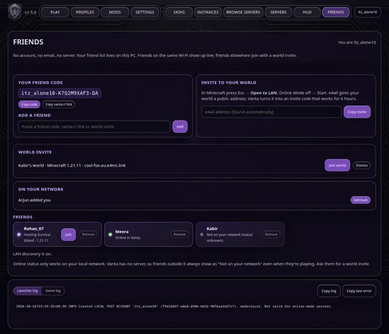

Guide
Play with friends
Vanta's FRIENDS tab works without any account, email or server. Everything stays on your PC.
1. Add each other
- Open FRIENDS. Your friend code looks like
itz_alone10-K7Q2M9XAF3-DA. Click Copy and send it (Discord, WhatsApp…), or send the vanta://friend/… link.
- Your friend pastes it into Add a friend. On the same Wi-Fi you'll also see each other under Nearby, with an Add back button.
2. Same Wi-Fi or LAN
Vanta announces itself on your local network every few seconds on UDP port 47786. Friends nearby show as online with their Minecraft version and the world they're hosting. When a friend opens a world to LAN, Join connects straight to it.
If Windows Firewall asks, allow Vanta on Private networks. Public Wi-Fi (school, café) often blocks devices from seeing each other; use a world invite instead.
3. Friends anywhere: world invites
- In your world press Esc → Open to LAN, set Online Mode: OFF, and start it. e4all (part of the main 1.21.11 instance; add it from MODS for other versions) prints a public address in chat.
- In Vanta's FRIENDS tab, paste the address and click Copy invite. The invite code works for 6 hours.
- Your friend pastes the invite into FRIENDS and clicks Join. Vanta picks (or installs) the matching Minecraft version and joins directly.
Honest limit: with no server, Vanta can't show whether friends outside your network are online.

Back to all guides ↑
Guide
e4all: let friends join your world
e4all is a Fabric mod that gives your Open to LAN world a public address, so friends outside your home can join without port forwarding. It comes with Vanta's main 1.21.11 instance. For another instance, open MODS, pick that instance and search e4all.
- Start your singleplayer world, press Esc → Open to LAN.
- Set Online Mode: OFF so friends on local accounts can join, then Start LAN World.
- e4all prints the address in chat. Friends use Multiplayer → Direct Connection, or you turn it into a one-click invite in FRIENDS.
Only invite people you trust: anyone with the address can join while the world is open. Close the world (or quit) to stop sharing.
Back to all guides ↑
Guide
Modpacks (.mrpack)
New in v1.6.0. INSTANCES › Modpacks searches Fabric modpacks on Modrinth, or imports a .mrpack file you downloaded.
- Vanta installs the pack's Minecraft version as its own instance (or uses it if you already have it).
- Every file is downloaded from Modrinth, GitHub or GitLab only, and checked against the pack's SHA-512 hashes before anything changes.
- That instance's current mods, config, resource packs, shaders and options are moved to a
vanta-backup-<time> folder first, so nothing is lost.
- Your main 1.21.11 instance is never replaced.
Share your own setup
Pick an instance and click Export .mrpack. Mods that are on Modrinth are linked (small file); anything else, plus your config and options, is bundled. The file is saved to your Downloads folder.

Back to all guides ↑
Guide
World backups
New in v1.6.0. INSTANCES › Worlds lists the worlds of the selected instance with their icon, mode, size and last played time.
- Back up zips the world. Backups are kept per instance in Vanta's data folder (
.vanta-data/backups next to Vanta on Windows, ~/Library/Application Support/Vanta/backups on macOS). Open backups folder shows them.
- Restore never overwrites: if the world still exists, the backup is added as “World (restored date)”.
- Delete asks you to type the folder name and always makes a backup first.
- Close Minecraft before restoring or deleting; Vanta refuses while the game is running.

Back to all guides ↑
Guide
Downloads
New in v1.6.2. Whenever Vanta is downloading something, a Downloads button appears in the top bar. Click it (or press Ctrl+K and type downloads) to see every download: Minecraft versions, mods, modpacks, Java and Vanta updates.
- Pause stops a Minecraft download where it is; Resume carries on from there.
- Cancel removes only the unfinished version folder. The shared sound and asset files are kept, so starting the same version again is faster.
- Files that were already complete and pass their hash check are never downloaded twice.
- Mods, modpacks, Java and Vanta updates are shown with their progress; they finish quickly and can't be paused.
- Clear finished hides completed and failed downloads for this session.

Back to all guides ↑
Guide
Trailer style
Trailer style is the Fast set plus Iris with Complementary Reimagined (Unbound as an alternative), Bare Bones + Fresh Animations, EMF/ETF, Not Enough Animations and Visuality. Turn it on when adding an instance, or later for any Fabric instance in INSTANCES › Trailer style.
- K turns shaders on/off in game (Iris). Switch packs in Options → Video Settings → Shader Packs.
- B toggles Gamma Utils night vision (fullbright), which still works with shaders on.
- Shaders are heavy. On laptops, make sure Java runs on the dedicated GPU (Windows: Settings → System → Display → Graphics → add
javaw.exe → High performance).
- 4 GB of RAM (INSTANCES › Name, memory & Java) is plenty for most shader setups.
- On Intel Macs with Iris/UHD graphics, Vanta warns before turning Trailer style on.
Back to all guides ↑
Guide
Intel Mac
- Apple menu → About This Mac. “Processor: Intel” means the Intel Mac download; “Chip: Apple M…” means Apple Silicon. The downloads section picks for you when it can.
- The Intel build is native x86_64 and needs macOS 12 Monterey or newer.
- Unzip, then right-click Vanta.app → Open → Open the first time (the app is unsigned). If it's still blocked: System Settings → Privacy & Security → Open Anyway.
- If no Java is installed, Vanta downloads the matching Temurin build (x64 on Intel) from Adoptium.
Intel defaults: 3–6 GB RAM based on your Mac's memory, G1 GC, and on Iris/UHD graphics new instances start at render distance 8 with Fast graphics, 60 FPS and VSync.
Honest limit: the Mac builds are built and tested on Linux and Windows; they have not been run on a real Mac yet. Please report problems on GitHub.
Back to all guides ↑
Guide
Troubleshooting
“WebView2 failed to start … resource is in use (0x800700AA)”
Vanta is already open (or still closing). Since v1.4.1 opening it again brings the existing window to the front; if you just closed it, wait a few seconds. If no window is visible, end Vanta in Task Manager and open it again.
“WebView2 Runtime not found”
Windows Firewall asks about Vanta or Java
Allow Private networks. Vanta uses UDP 47786 on your local network for FRIENDS, and Java needs it to host or join LAN worlds. Public networks can stay unticked.
Friends on the same Wi-Fi don't show up
Both PCs need Vanta open and Vanta allowed on Private networks. Check that Windows treats your Wi-Fi as Private (Settings → Network → your Wi-Fi). Guest and school networks often isolate devices; use a world invite instead.
“Java was not found” or “needs a newer Java”
1.18–1.20.4 need Java 17, 1.20.5–1.21.x need Java 21, and 26.x needs Java 25. Install Eclipse Temurin (tick “Add to PATH” on Windows) and restart Vanta. On macOS Vanta downloads it for you.
Minecraft crashed
The crash card on PLAY explains the likely cause, lists the mods that were involved, and (for added instances) can turn a suspect mod off in one click. Copy summary gives you a short text to paste when asking for help.
A download stopped or failed its hash check
Vanta retries automatically and never keeps a file whose hash doesn't match. If it still fails, check your connection (or VPN/antivirus) and press Try again.
PLAY says “mod problems found” before the game starts
Since v1.6.4 Vanta reads the mods in the instance before launching and lists anything that usually crashes the game. Fix it (Open MODS, or remove the file in the instance's mods folder) or choose Launch anyway. INSTANCES › Check mods runs the same check any time. It only reads files.
Mac: “The Java process exited before it stayed alive (exit None)”
This was a Vanta bug on macOS (the game was fine; Vanta stopped it). Press Update in Vanta's top bar to get 1.6.8 or newer, then press PLAY again.
“Found duplicate mods” / the same mod installed twice
Two copies of one mod (often an old and a new version) stop Fabric from starting. Open the instance's mods folder (INSTANCES › Open game folder › mods) and delete the older file.
“ZipException” / “zip END header not found”
A game or mod file is damaged, usually a half-finished download. Press Check mods on the crash card: damaged jars are listed with a Turn them off button. If no mod is damaged, reinstall that Minecraft version.
“Could not find or load main class”
The Minecraft files for that version are incomplete. Reinstall the version, then press PLAY again.
“Access is denied” / “AccessDeniedException”
The system blocked a game file. Close other launchers or a second copy of Minecraft. If your antivirus quarantined a file, restore it and allow the Vanta folder.
“Address already in use” / “BindException”
Another program already uses that network port, often a second Minecraft or a server. Close it, or pick another port for the server or LAN world.
“requires fabric-api, which is missing”
Most Fabric mods need Fabric API. Open MODS, pick the instance, search Fabric API and install it for that version.
A mod “requires” another mod or a different version
The error names the mod that's needed. Install it from MODS, or update both mods so their versions match. Vanta's pre-launch check shows which mod needs which.
Forge or NeoForge mods in a Fabric instance
Jars made for Forge (they contain mods.toml) don't load on Fabric. Find the Fabric version on Modrinth, or remove them.
OptiFine with Sodium or Iris
OptiFine replaces the same parts of the game as Sodium and Iris, so they crash together. Remove OptiFine/OptiFabric; Iris loads shader packs instead.
“UnsupportedClassVersionError” or “InaccessibleObjectException”
The Java version doesn't match. Minecraft 1.18–1.20.4 use Java 17, 1.20.5–1.21.x use Java 21, and 26.x uses Java 25. Let Vanta pick Java (don't force a different one in the JVM arguments).
Shaders: “failed to compile” or a black screen
The shader pack doesn't work with this Iris version or your GPU. Press K in game to turn shaders off, then choose another pack in Video Settings › Shader Packs, or update the GPU driver.
Graphics driver crash (EXCEPTION_ACCESS_VIOLATION, nvoglv64.dll, atio6axx.dll, ig9icd64.dll)
The GPU driver crashed. Update it from NVIDIA, AMD or Intel, turn shaders off, and on laptops make Java use the dedicated GPU (Windows Settings › Display › Graphics).
“OutOfMemoryError” or “Could not reserve enough space”
Out of memory: raise RAM for the instance (INSTANCES › Suggest RAM). “Could not reserve” means the RAM setting is higher than the PC or Java allows; lower it.
A mod's config file is damaged (JsonSyntaxException)
Open the game folder, move that mod's file out of the config folder and start again; the mod creates a fresh one.
A world won't load or crashes every time (“Ticking entity”, damaged region file)
Restore a backup in INSTANCES › Worlds. If a modded block or mob causes it, update or remove that mod after backing up the world.
“No space left on device”
The disk is full. Free some space (Downloads, old instances) and start again.
MODS says it's offline
Vanta couldn't reach Modrinth, so it shows saved results and searches them. Browsing works; installing needs the internet. Check your connection, VPN or firewall and press Try again.
The game is slow or stutters
Use Suggest RAM in INSTANCES › Name, memory & Java (more than 6–8 GB rarely helps), turn shaders off with K, lower render distance, and on laptops plug in and use the dedicated GPU.
Back to all guides ↑